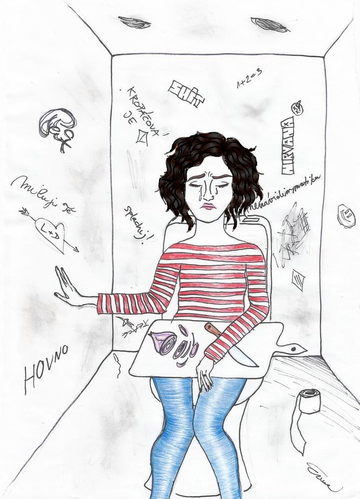

« předchozí článek | obsah čísla | následující článek »
Již delší dobu mnozí kulturně vzdělaní lidé vyjadřují znechucení nad dekadencí soudobých populárních filmů a seriálů, které diváky podporují v konzumním způsobu života a zásobují je snadno vnímatelnými, leč bezobsažnými, slastmi, jejichž přemíra má pak negativní vliv na osobnost diváků (zvlášť mladých) a potlačuje jejich přirozenou kreativitu a schopnost sebereflexe.
Naštěstí ještě vznikají i díla, jejichž prvotním účelem není působit divákům slast při své pasivní konzumaci, ale něco vypovědět, rozšířit divákovi obzory, pomoci mu poznat náš svět z nových úhlů pohledu a snad i podnítit úvahy nad sebou samým či nad soudobou společností a kulturou. Seriál Ester Krejčí k pokusům o takové dílo patří.
Seriál začíná v pokoji Jany Zlomilové, celkem běžné, leč nesmělé a ostýchavé osmnáctileté dívky. Na sobě má úbor, jež (až na chybějící kapuci) nápadně připomíná známý myší kožíšek z pohádky Princezna se zlatou hvězdou. Vydává se poprvé do nové školy, a zatímco řeší svůj potenciálně banální problém – jak zapadnout do tamějšího kolektivu, skrytý vypravěč divákovi vysvětluje, proč si dcera vyká i s vlastními rodiči a proč je Nikola Merlinová jejich třídní profesor, ne profesorka. Jazykové odlišnosti nečiní dílo nijak nesrozumitelným, divák si však při srovnání jazyka postav s naší češtinou může uvědomit míru, do jaké je náš jazyk svázán potřebou vyjadřovat pohlaví člověka, ale současně také, že jde o umělý a snadno překonatelný kulturní konstrukt.
Vraťme se však k Janě Zlomilové. Ukazuje se, že její problém nebude tak triviální, jak by se dalo očekávat. Z nových spolužáků nemá dobrý pocit, už od počátku jí připadají divní (v tom se s ní zřejmě většina diváků shodne). Zvlášť jí zaujme Ester Krejčí, která ji docela protivně odbude, a Moje vinná réva, která je jí podezřelá už svojí přezdívkou. Ve třídě se k ní první den nikdo spontánně nehlásí.
Zatímco ve škole je Jana Zlomilová zamlklá a nesmělá, doma se rozvalí na postel, vytáhne mobilní telefon a vypoví svoje dojmy příteli Vlastě Novotné (to nepřechylování je míněno vážně a diváci si na něj dříve či později zvyknou).
Druhý den ve škole Jana Zlomilová překoná svoji nesmělost a odhodlá se se spolužáky seznámit. Její původní dojem se víceméně potvrzuje. Spolužáci jsou divní. Jeden z nich se k ní dokonce zachová tak nechutně, že to Jana Zlomilová nevydrží a uteče na záchod. Ukáže se však, že Moje vinná réva není taková, jakou si ji Jana Zlomilová představovala; chce jí pomoci a vybízí k tomu i Ester Krejčí. Ta však její entuziasmus nesdílí a jejich vzájemný konflikt nabírá pomalu na absurditě, což si Moje vinná réva uvědomí, a tak sama nabídne Janě Zlomilové své přátelství, čímž nastalý problém vyřeší. Děj však nekončí, jen je přerušen hodinou vyučování, což je další ujištění, že navzdory nezvyklým způsobům chování a jazykovým odlišnostem se příběh neodehrává v žádné předaleké galaxii, ale na celkem obyčejném pozemském gymnáziu, jaké většina diváků snad měla příležitost zažít. Po hodině Moje vinná réva citlivě seznámí Janu Zlomilovou s dalšími spolužáky a objeví se první náznaky soucitu. Noví spolužáci už pro Janu Zlomilovou nejsou takoví divní, obávaní a nepochopitelní nepřátelé, jaké si původně představovala, ale jsou mezi nimi i takoví, se kterými si trochu rozumí a domluví se s nimi.
Když se pak Jana Zlomilová vrátí domů, už ví, že nová škola nebude tak špatná, jak si myslela, a myšlenka na to, že se spolužáky stráví dalších téměř devět měsíců do maturity, už není nepříjemná. Epizoda končí, ale divákovi je jasné, že to je teprve začátek, a píseň Within Temptation o tom, že všichni jsme součástí nekonečného příběhu, která hraje na pozadí titulků, to jen potvrzuje.
Děj první epizody je celkem jednoduchý a přímočarý (až na eukatastrofu způsobenou Mojí vinnou révou). Vypráví o příchodu vcelku obyčejné dívky na nové gymnázium – do třídy plné hochů a dívek budících negativní první dojem. Nekomplikovanost děje umožňuje divákovi soustředit se na charaktery postav, které jsou vzhledem k jejich velkému množství a malému rozsahu epizody většinou jen naznačeny (rozvinuty budou v dalších epizodách). Zatímco Jana Zlomilová a Moje vinná réva mají šance získat si sympatie diváků velmi rychle, ostatní dvě hlavní postavy, Ester Krejčí s až nelidsky chladným vystupováním a Tamara Janů, která působí jako zdrogovaná (zvlášť když podezřívá Janu Zlomilovou, že pláče na záchodě proto, že tam krájí cibuli), si na to počkají alespoň do příští epizody. Také si lze povšimnout, že divák si začne zvykat na vykání mezi spolužáky, které v dnešním českém kulturním kontextu působí značně nezvykle, a již zmíněné nepřechylování, které by si dnešní feministky nejspíše vyložily jako příklad útlaku žen, ale ve skutečnosti jde spíše o podnět k delší a hlubší analýze či polemice.
Seriál Ester Krejčí bohužel dosud nebyl zfilmován, scénáře všech vydaných epizod jsou však k dispozici na stránkách http://esterkrejci.xf.cz/ v sekci Epizody. Snad je to i dobře, neboť žádný režisér nedokáže natočit tak krásný seriál, jaký si vy jako čtenáři dokážete představit. Myslete na to, až budete číst scénář, a jistě si odnesete řadu nových zážitků.
Tamara Janů, která působí jako zdrogovaná (zvlášť když podezřívá Janu Zlomilovou, že pláče na záchodě proto, že tam krájí cibuli)…
